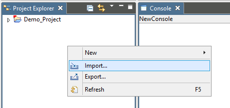
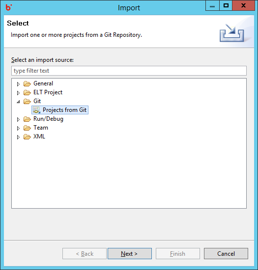
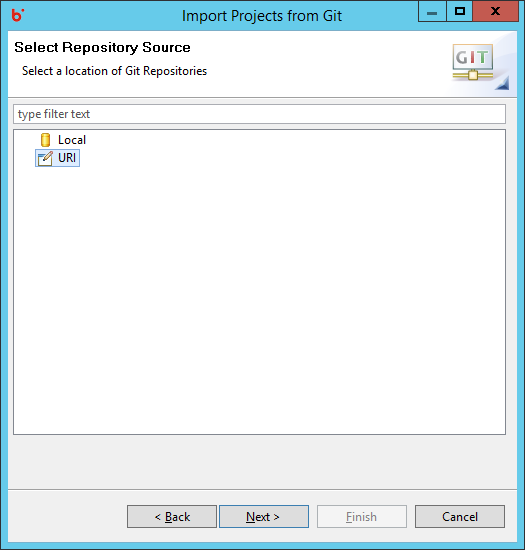
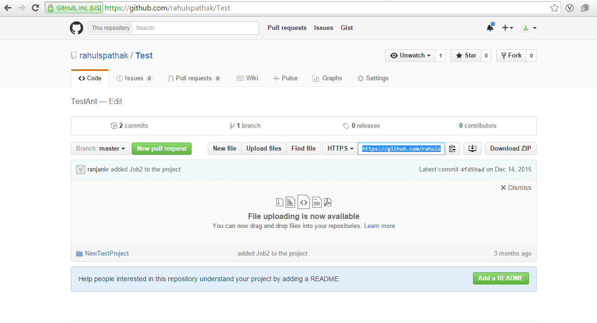
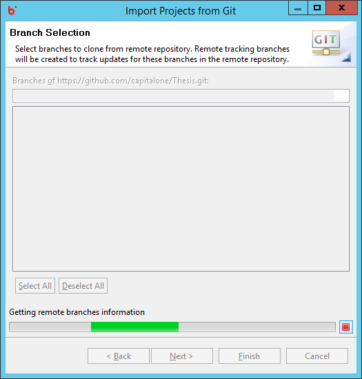
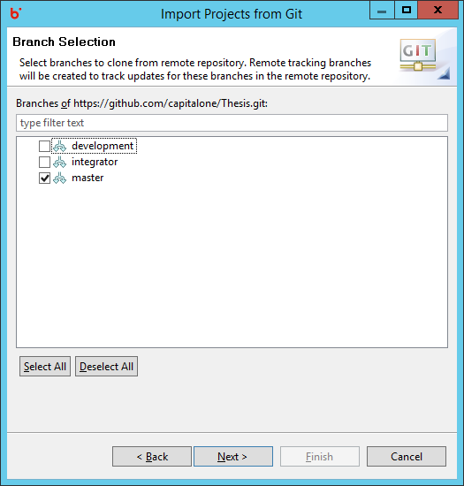
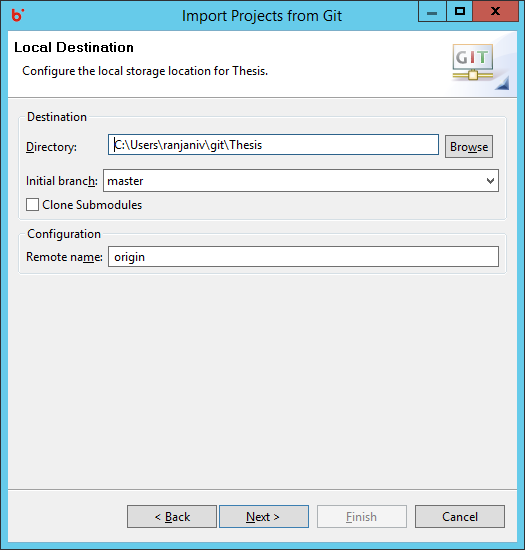
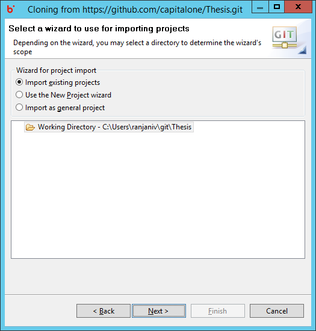
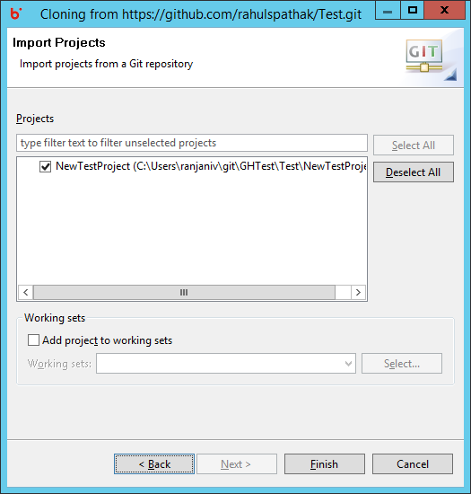
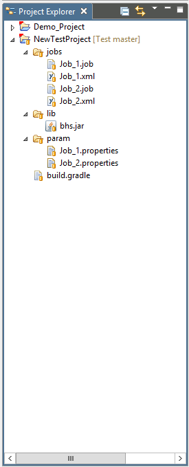

Accelero Help
Accelero Help
GIT-How to Check out Project
Accelero Release Version 1.0
To Import Project from Git Hub into our local workspace Right Click Project Explorer -> Import -> Projects from Git -> Click on URI then copy the URI of the Repo from Git Hub that contains the project which needs to be imported into the text box.




Click on next and wait for the branches to appear, select the branch that contains the project or jobs you wish to import


Browse the location you wish to import the project into and say Next.

Wait for the cloning process to complete, and select Import Existing projects -> Next

Select the project you wish to import and click Finish.

Finish will import the project will be visible in the project explorer
